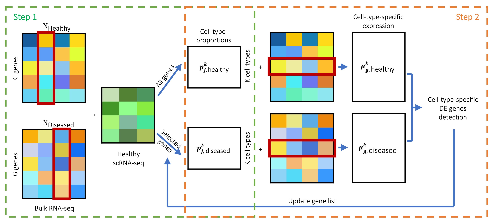

MuSiC is an analysis toolkit for single-cell RNA-Seq experiments. To use this package, you will need the R statistical computing environment (version 3.0 or later) and one integrated package available through Github.
Multi-subject Single Cell deconvolution (MuSiC)
MuSiC is a deconvolution method that utilizes cross-subject scRNA-seq to estimate cell type proportions in bulk RNA-seq data. 
MuSiC2
MuSiC2 is an iterative algorithm aiming to improve cell type deconvolution for bulk RNA-seq data using scRNA-seq data as reference when the bulk data are generated from samples with multiple clinical conditions where at least one condition is different from the scRNA-seq reference. 
How to cite MuSiC
Please cite the following publications:
Bulk tissue cell type deconvolution with multi-subject single-cell expression reference
X. Wang, J. Park, K. Susztak, N.R. Zhang, M. Li
Nature Communications. 2019 Jan 22 https://doi.org/10.1038/s41467-018-08023-x
MuSiC2: cell type deconvolution for multi-condition bulk RNA-seq data
J. Fan, Y. Lyu, Q. Zhang, X. Wang, R. Xiao, M. Li
Briefings in Bioinformatics. 2022 https://doi.org/10.1093/bib/bbac430
Installation
Both MuSiC and MuSiC2 functions are available in one package.
# install devtools if necessary
install.packages('devtools')
# install the MuSiC package
devtools::install_github('xuranw/MuSiC')
# load
library(MuSiC)